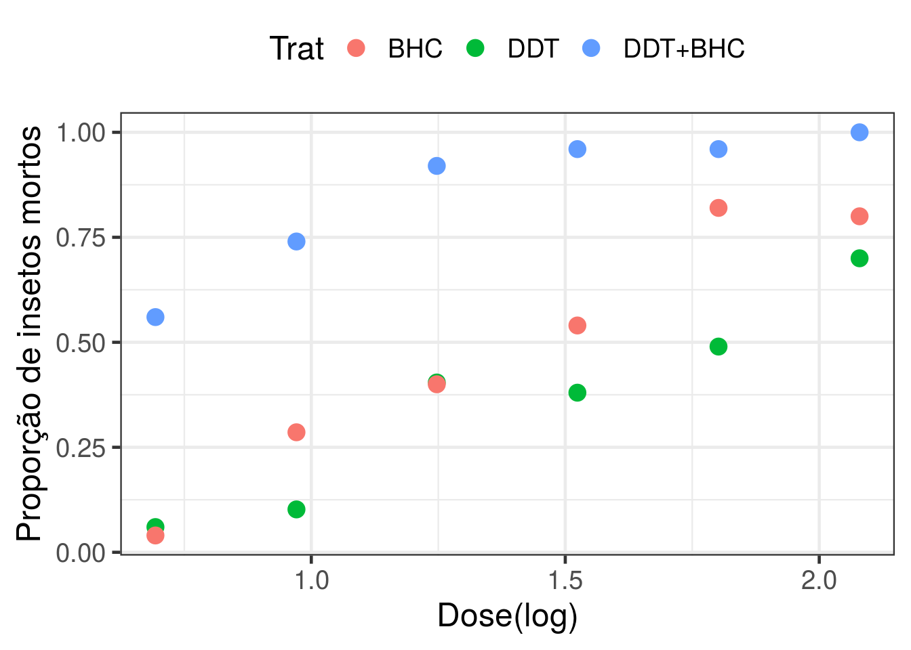
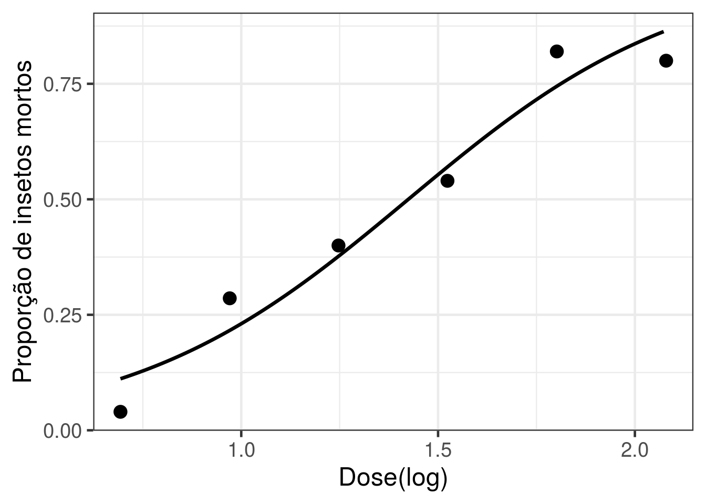
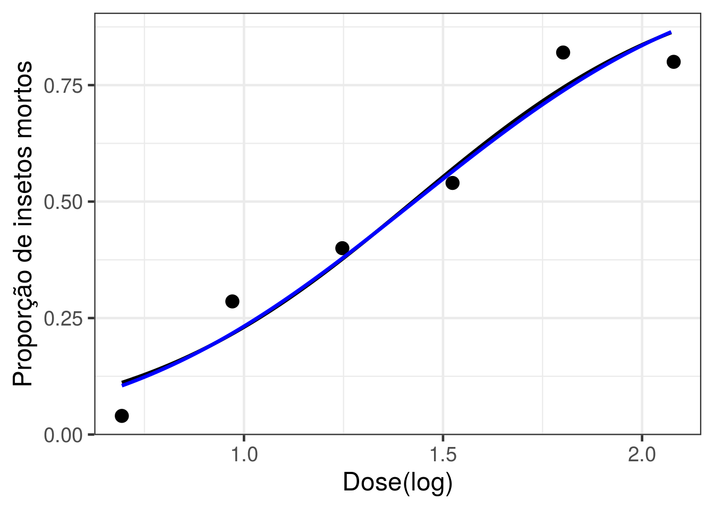
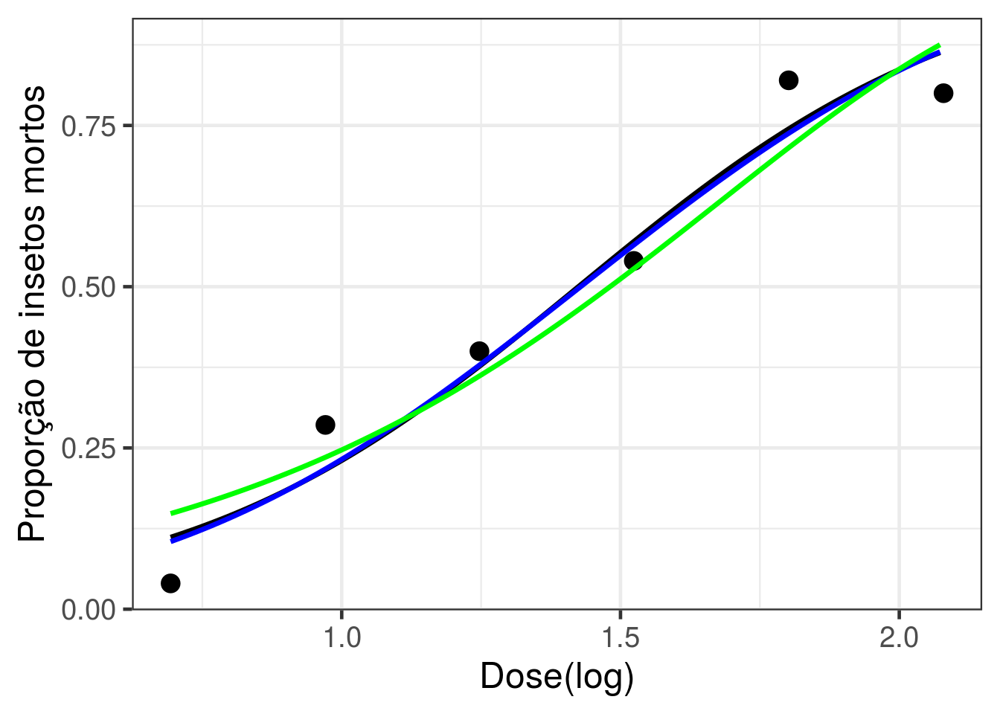
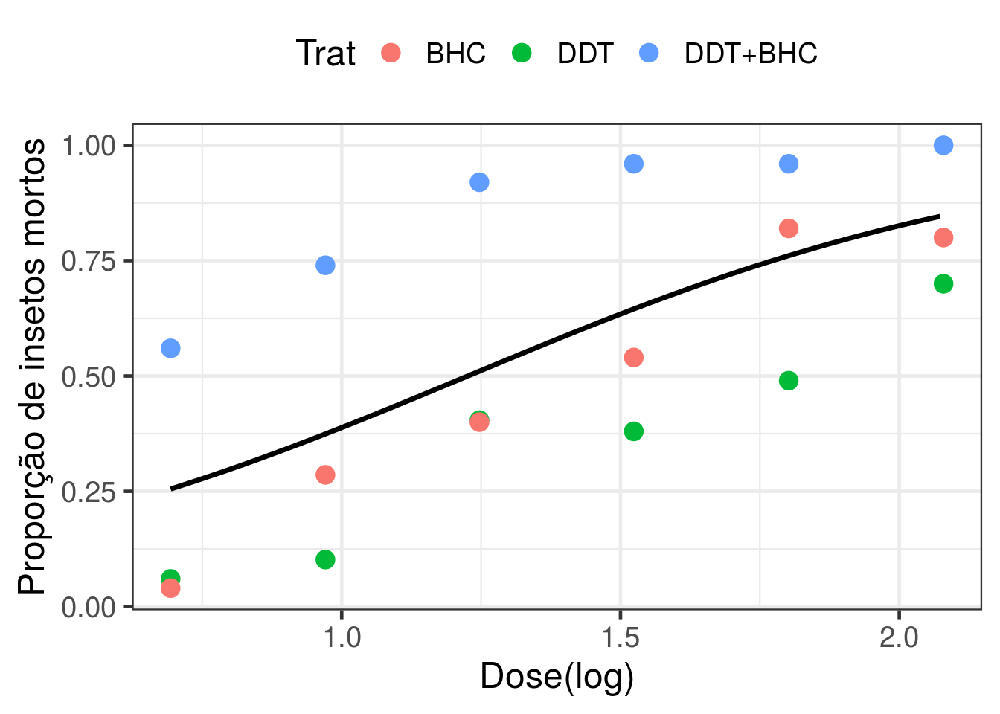
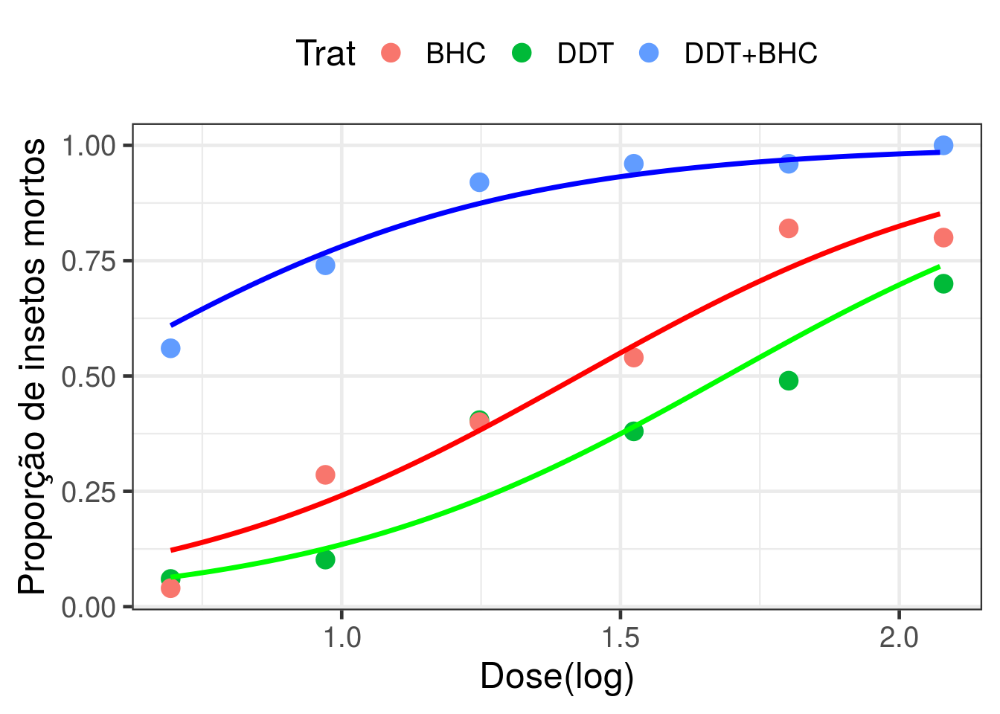
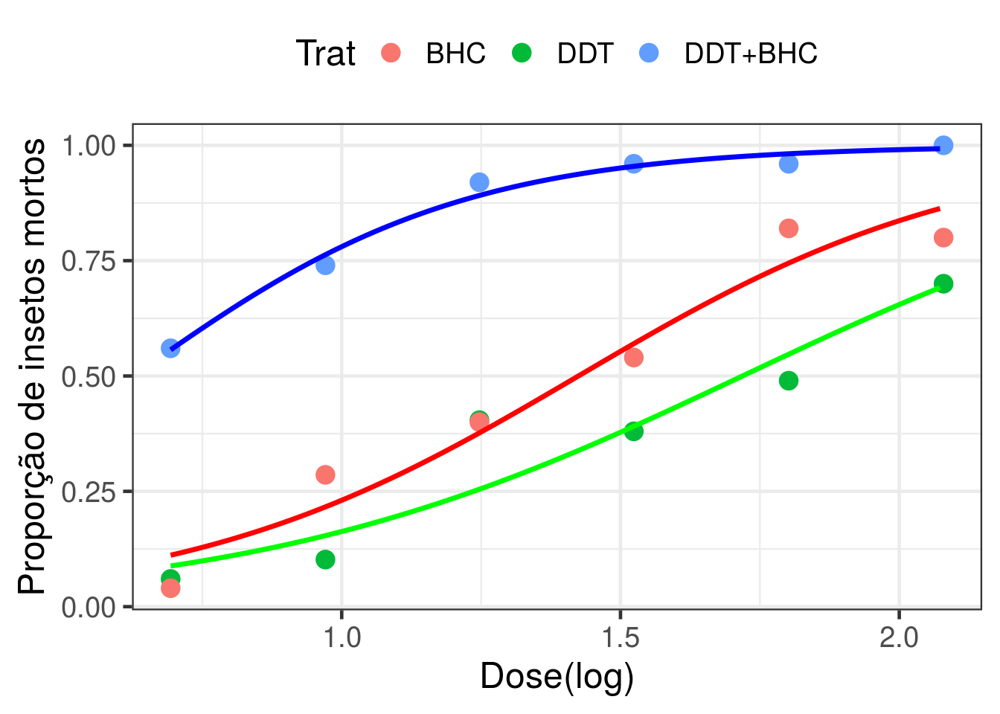

Besouros da farinha
Cesar Taconeli
Regressão para dados binários
Exemplo 2
Dados de mum experimento do tipo dose-resposta, referente à mortalidade de besouros sob três tratamentos (DDT, BHC e DDT+BHC), sob seis diferentes doses.
ldose <- log(rep(c(2, 2.64, 3.48, 4.59, 6.06, 8), 3)) ### log-dose
Trat <- rep(c('DDT', 'BHC', 'DDT+BHC'), each = 6) ### tratamento
Resposta <- c(3, 5, 19, 19, 24, 35, 2, 14, 20, 27, 41, 40, 28, 37, 46, 48, 48, 50)Número de insetos mortos sob cada condição experimental.
Número de insetos submetidos a cada condição experimental.
Análise descritiva
g0 <- ggplot(dados, aes(x = ldose, y = Resposta/n, color=Trat)) +
geom_point(size = 4) + theme_bw(base_size = 18) +
labs(x = 'Dose(log)', y = 'Proporção de insetos mortos') +
theme(legend.position="top")
g0
Parte 1
Vamos começar ajustando um modelo apenas para os insetos tratados com BHC
data_BCH <- subset(dados, Trat=='BHC')
g1 <- ggplot(data_BCH, aes(x = ldose, y = Resposta/n)) +
geom_point(size = 4) + theme_bw(base_size = 18) +
labs(x = 'Dose(log)', y = 'Proporção de insetos mortos') +
theme(legend.position="top")
g1
Modelo com função de ligação logito
A primeira forma de declarar a resposta quando temos um glm binomial com dados grupados é por umja matriz com duas colunas, cada uma delas com as contagens de um dos desfechos binários (insetos mortos e não mortos, no caso).
Forma alternativa:
Neste caso, declaramos a resposta como a fração de insetos mortos, e o número de insetos mortos é declarado em weights.
##
## Call:
## glm(formula = cbind(Resposta, n - Resposta) ~ ldose, family = binomial,
## data = data_BCH)
##
## Deviance Residuals:
## 7 8 9 10 11 12
## -1.8245 1.1416 0.3390 -0.4281 1.2679 -1.2728
##
## Coefficients:
## Estimate Std. Error z value Pr(>|z|)
## (Intercept) -4.0428 0.4972 -8.131 4.27e-16 ***
## ldose 2.8381 0.3392 8.367 < 2e-16 ***
## ---
## Signif. codes: 0 '***' 0.001 '**' 0.01 '*' 0.05 '.' 0.1 ' ' 1
##
## (Dispersion parameter for binomial family taken to be 1)
##
## Null deviance: 105.1973 on 5 degrees of freedom
## Residual deviance: 8.1581 on 4 degrees of freedom
## AIC: 35.376
##
## Number of Fisher Scoring iterations: 4##
## Call:
## glm(formula = Resposta/n ~ ldose, family = binomial, data = data_BCH,
## weights = n)
##
## Deviance Residuals:
## 7 8 9 10 11 12
## -1.8245 1.1416 0.3390 -0.4281 1.2679 -1.2728
##
## Coefficients:
## Estimate Std. Error z value Pr(>|z|)
## (Intercept) -4.0428 0.4972 -8.131 4.27e-16 ***
## ldose 2.8381 0.3392 8.367 < 2e-16 ***
## ---
## Signif. codes: 0 '***' 0.001 '**' 0.01 '*' 0.05 '.' 0.1 ' ' 1
##
## (Dispersion parameter for binomial family taken to be 1)
##
## Null deviance: 105.1973 on 5 degrees of freedom
## Residual deviance: 8.1581 on 4 degrees of freedom
## AIC: 35.376
##
## Number of Fisher Scoring iterations: 4Os modelos ajustados são rigorosamente os mesmos. Muda apenas a forma de declaração.
Exercício: Escreva a equação do modelo ajustado e calcule a estimativa da probabilidade de morte para insetos submetidos a uma dose de 7 unidades. Adicionalmente, interprete (se couber) os parâmetros do modelo.
Agora, vamos adicionar ao gráfico a curva referente ao modelo ajustado
grid_ldose <- seq(log(2), log(8), 0.01) ### grid de valores para a (log) dose.
preditos <- predict(ajuste1, newdata=data.frame(ldose = grid_ldose), type='response')Probabilidades estimadas para as doses no grid que criamos
new.data <- data.frame(grid_ldose, preditos)
g2 <- g1 + geom_line(data = new.data, aes(x = grid_ldose, y = preditos),
size = 1.2, color = 'black')
g2
Modelo com função de ligação probito
ajuste2 <- glm(Resposta/n ~ ldose, family = binomial(link = 'probit'),
data = data_BCH, weights = n)
summary(ajuste2) ##
## Call:
## glm(formula = Resposta/n ~ ldose, family = binomial(link = "probit"),
## data = data_BCH, weights = n)
##
## Deviance Residuals:
## 7 8 9 10 11 12
## -1.6900 1.1213 0.3137 -0.3505 1.3744 -1.3053
##
## Coefficients:
## Estimate Std. Error z value Pr(>|z|)
## (Intercept) -2.4373 0.2764 -8.817 <2e-16 ***
## ldose 1.7062 0.1881 9.069 <2e-16 ***
## ---
## Signif. codes: 0 '***' 0.001 '**' 0.01 '*' 0.05 '.' 0.1 ' ' 1
##
## (Dispersion parameter for binomial family taken to be 1)
##
## Null deviance: 105.1973 on 5 degrees of freedom
## Residual deviance: 7.9272 on 4 degrees of freedom
## AIC: 35.145
##
## Number of Fisher Scoring iterations: 4Exercício: Escreva a equação do modelo ajustado e calcule a estimativa da probabilidade de morte para insetos submetidos a uma dose de 7 unidades.
Adicionando ao gráfico a curva referente ao odelo ajustado
preditos2 <- predict(ajuste2, newdata=data.frame(ldose = grid_ldose), type='response')
new.data2 <- data.frame(grid_ldose, preditos2)
g3 <- g2 + geom_line(data = new.data2, aes(x = grid_ldose, y = preditos2),
size = 1.2, color = 'blue')
g3
Modelo com função de ligação complemento log-log
ajuste3 <- glm(Resposta/n ~ ldose, family = binomial(link = 'cloglog'),
data = data_BCH, weights = n)
summary(ajuste3) ##
## Call:
## glm(formula = Resposta/n ~ ldose, family = binomial(link = "cloglog"),
## data = data_BCH, weights = n)
##
## Deviance Residuals:
## 7 8 9 10 11 12
## -2.4988 0.8083 0.5615 0.1727 1.7142 -1.5676
##
## Coefficients:
## Estimate Std. Error z value Pr(>|z|)
## (Intercept) -3.1170 0.3562 -8.751 <2e-16 ***
## ldose 1.8570 0.2166 8.575 <2e-16 ***
## ---
## Signif. codes: 0 '***' 0.001 '**' 0.01 '*' 0.05 '.' 0.1 ' ' 1
##
## (Dispersion parameter for binomial family taken to be 1)
##
## Null deviance: 105.197 on 5 degrees of freedom
## Residual deviance: 12.638 on 4 degrees of freedom
## AIC: 39.856
##
## Number of Fisher Scoring iterations: 5Exercício: Escreva a equação do modelo ajustado e calcule a estimativa da probabilidade de morte para insetos submetidos a uma dose de 7 unidades.
Adicionando ao gráfico a curva referente ao odelo ajustado
preditos3 <- predict(ajuste3, newdata = data.frame(ldose = grid_ldose), type='response')
new.data3 <- data.frame(grid_ldose, preditos3)
g4 <- g3 + geom_line(data = new.data3, aes(x = grid_ldose, y = preditos3),
size = 1.2, color = 'green')
g4
AIC
Vamos comparar os ajustes dos três modelos calculando os respectivos AICs.
## df AIC
## ajuste1 2 35.37617
## ajuste2 2 35.14529
## ajuste3 2 39.85641## [1] -15.68809 -15.57264 -17.92820Log-verossimilhanças maximizadas.
O modelo com ligação probito é ligeiramente superior ao com ligação logito. O modelo cloglog claramente tem pior ajuste que seus concorrentes.
E se ao invés de analisarmos os dados da forma como estão disponíveis (grupados) analisarmos na forma não grupada (ou seja, um inseto por linha)? Vamos construir uma nova base.
data_BCH2 <- data_BCH[rep(seq_len(nrow(data_BCH)), times=data_BCH$n),1:2]
respostas <- c(rbind(data_BCH$Resposta, data_BCH$n - data_BCH$Resposta))
data_BCH2$resp_bin <- rep(c(1,0,1,0,1,0,1,0,1,0,1,0), times = respostas)
head(data_BCH2, 20)## ldose Trat resp_bin
## 7 0.6931472 BHC 1
## 7.1 0.6931472 BHC 1
## 7.2 0.6931472 BHC 0
## 7.3 0.6931472 BHC 0
## 7.4 0.6931472 BHC 0
## 7.5 0.6931472 BHC 0
## 7.6 0.6931472 BHC 0
## 7.7 0.6931472 BHC 0
## 7.8 0.6931472 BHC 0
## 7.9 0.6931472 BHC 0
## 7.10 0.6931472 BHC 0
## 7.11 0.6931472 BHC 0
## 7.12 0.6931472 BHC 0
## 7.13 0.6931472 BHC 0
## 7.14 0.6931472 BHC 0
## 7.15 0.6931472 BHC 0
## 7.16 0.6931472 BHC 0
## 7.17 0.6931472 BHC 0
## 7.18 0.6931472 BHC 0
## 7.19 0.6931472 BHC 0data_BCH2 é a base de dados desagregados. Agora, cada linha da base é o dado de um único besouro, e a resposta é 1, para os insetos mortos, e zero, para os vivos.
Vamos ajustar o modelo de regressão binomial com ligação logito à base de dados desagregada.
##
## Call:
## glm(formula = resp_bin ~ ldose, family = binomial, data = data_BCH2)
##
## Deviance Residuals:
## Min 1Q Median 3Q Max
## -2.0018 -0.6981 -0.4862 0.7678 2.0947
##
## Coefficients:
## Estimate Std. Error z value Pr(>|z|)
## (Intercept) -4.0428 0.4972 -8.131 4.27e-16 ***
## ldose 2.8381 0.3392 8.367 < 2e-16 ***
## ---
## Signif. codes: 0 '***' 0.001 '**' 0.01 '*' 0.05 '.' 0.1 ' ' 1
##
## (Dispersion parameter for binomial family taken to be 1)
##
## Null deviance: 414.10 on 298 degrees of freedom
## Residual deviance: 317.06 on 297 degrees of freedom
## AIC: 321.06
##
## Number of Fisher Scoring iterations: 4E vamos comparar os ajustes dos modelos aplicados à base agregada e à base não agregada por meio das estimativas dos parâmetros e correspondentes erros padrões.
## Calls:
## 1: glm(formula = cbind(Resposta, n - Resposta) ~ ldose, family =
## binomial, data = data_BCH)
## 2: glm(formula = resp_bin ~ ldose, family = binomial, data = data_BCH2)
##
## Model 1 Model 2
## (Intercept) -4.043 -4.043
## SE 0.497 0.497
##
## ldose 2.838 2.838
## SE 0.339 0.339
## Observe que o modelo ajustado às duas bases é idêntico. Então, usar a base de dados agregada ou não agregada não altera o resultado do ajuste.
## 'log Lik.' -15.68809 (df=2)## 'log Lik.' -158.529 (df=2)As escalas das verossimilhanças, no entanto, são diferentes. Em particular, o teste da qualidade do ajuste, baseado na deviance residual, se aplica aos dados agregados (para n grande), mas não aos dados desagregados. Vamos avaliar a qualidade do ajuste.
## [1] 0.08595524p-valor do teste da qualidade do ajuste. Ao nível de significância de 5% não temos evidência de que o modelo não se ajuste bem aos dados.
Exercício - Avaliar a qualidade dos ajustes com base nas deviances (teste ao nível de significância de 5%). Faça também qqplots com envelopes simulados.
Parte 2
Agora, vamos analisar os três tratamentos conjuntamente. Nesta
etapa, vamos usar apenas a função de ligação logito
Gráfico de dispersão.
h0 <- ggplot(dados, aes(x = ldose, y = Resposta/n, color=Trat)) +
geom_point(size = 4) + theme_bw(base_size = 18) +
labs(x = 'Dose(log)', y = 'Proporção de insetos mortos') +
theme(legend.position="top")
h0Conforme discutido em aula, vamos considerar três modelos, conforme descrito na sequência:
ajuste4 - Modelo de retas coincidentes - Sem considerar o efeito de tratamento. ajuste5 - Modelo de retas paralelas - Considerando o efeito de tratamento apenas no intercepto (modelo aditivo). ajuste6 - Modelo de retas concorrentes - Sem considerar o efeito de tratamento no intercepto e associado à dose (modelo multiplicativo - com efeito de interação)..
Modelo de retas coincidentes
Este é o modelo mais simples, em que ajustamos uma única reta (na escala do preditor, curva na escala da resposta) para os três tratamentos.
##
## Call:
## glm(formula = cbind(Resposta, n - Resposta) ~ ldose, family = binomial,
## data = dados)
##
## Deviance Residuals:
## Min 1Q Median 3Q Max
## -4.336 -3.381 -1.384 4.024 6.301
##
## Coefficients:
## Estimate Std. Error z value Pr(>|z|)
## (Intercept) -2.4653 0.2386 -10.33 <2e-16 ***
## ldose 2.0106 0.1703 11.81 <2e-16 ***
## ---
## Signif. codes: 0 '***' 0.001 '**' 0.01 '*' 0.05 '.' 0.1 ' ' 1
##
## (Dispersion parameter for binomial family taken to be 1)
##
## Null deviance: 413.65 on 17 degrees of freedom
## Residual deviance: 246.83 on 16 degrees of freedom
## AIC: 314.3
##
## Number of Fisher Scoring iterations: 5Adicionando o modelo ajustado ao gráfico.
preditos4 <- predict(ajuste4, newdata=data.frame(ldose = grid_ldose), type='response')
new.data4 <- data.frame(grid_ldose, preditos4)
h1 <- h0 + geom_line(data = new.data4, aes(x = grid_ldose, y = preditos4),
size = 1.2, color = 'black')
h1
Modelo de retas paralelas
Este é o modelo intermediário (aditivo), em que ajustamos retas paralelas (na escala do preditor) para os três tratamentos.
##
## Call:
## glm(formula = cbind(Resposta, n - Resposta) ~ ldose + Trat, family = binomial,
## data = dados)
##
## Deviance Residuals:
## Min 1Q Median 3Q Max
## -2.0270 -0.6160 -0.2422 0.9016 2.6120
##
## Coefficients:
## Estimate Std. Error z value Pr(>|z|)
## (Intercept) -3.8425 0.3327 -11.550 < 2e-16 ***
## ldose 2.6958 0.2157 12.498 < 2e-16 ***
## TratDDT -0.7128 0.1981 -3.598 0.00032 ***
## TratDDT+BHC 2.4177 0.2381 10.154 < 2e-16 ***
## ---
## Signif. codes: 0 '***' 0.001 '**' 0.01 '*' 0.05 '.' 0.1 ' ' 1
##
## (Dispersion parameter for binomial family taken to be 1)
##
## Null deviance: 413.648 on 17 degrees of freedom
## Residual deviance: 21.282 on 14 degrees of freedom
## AIC: 92.753
##
## Number of Fisher Scoring iterations: 4Agora, para predição precisamos de um grid de valores para cada inseticida. Vamos usar a função expand.grid para isso.
trat <- levels(dados$Trat)
grid_trat <- expand.grid(grid_ldose, trat)
names(grid_trat) <- c("grid_ldose", "trat")
preditos5 <- predict(ajuste5, newdata = data.frame(ldose = grid_trat[,1], Trat = grid_trat[,2]),
type='response')
new.data5 <- data.frame(grid_trat, preditos5)
h0 + geom_line(data = subset(new.data5, trat == 'BHC'), aes(x = grid_ldose, y = preditos5),
size = 1.2, color = 'red') +
geom_line(data = subset(new.data5, trat == 'DDT'), aes(x = grid_ldose, y = preditos5),
size = 1.2, color = 'green') +
geom_line(data = subset(new.data5, trat == 'DDT+BHC'), aes(x = grid_ldose, y = preditos5),
size = 1.2, color = 'blue')
Adicionando as curvas de mortalidade vs dose para cada inseticida.
Modelo de retas concorrentes
Este é o modelo mais completo (multiplicativo - com interação), em que ajustamos retas concorrentes (na escala do preditor) para os três tratamentos.
##
## Call:
## glm(formula = cbind(Resposta, n - Resposta) ~ ldose * Trat, family = binomial,
## data = dados)
##
## Deviance Residuals:
## Min 1Q Median 3Q Max
## -1.82453 -0.78870 -0.05548 0.59419 2.24095
##
## Coefficients:
## Estimate Std. Error z value Pr(>|z|)
## (Intercept) -4.0428 0.4972 -8.131 4.27e-16 ***
## ldose 2.8381 0.3392 8.367 < 2e-16 ***
## TratDDT 0.1278 0.7118 0.180 0.8575
## TratDDT+BHC 1.9221 0.7722 2.489 0.0128 *
## ldose:TratDDT -0.5602 0.4680 -1.197 0.2313
## ldose:TratDDT+BHC 0.5503 0.6662 0.826 0.4088
## ---
## Signif. codes: 0 '***' 0.001 '**' 0.01 '*' 0.05 '.' 0.1 ' ' 1
##
## (Dispersion parameter for binomial family taken to be 1)
##
## Null deviance: 413.65 on 17 degrees of freedom
## Residual deviance: 17.89 on 12 degrees of freedom
## AIC: 93.361
##
## Number of Fisher Scoring iterations: 4preditos6 <- predict(ajuste6, newdata = data.frame(ldose = grid_trat[,1], Trat = grid_trat[,2]), type='response')
new.data6 <- data.frame(grid_trat, preditos6)
h0 + geom_line(data = subset(new.data6, trat == 'BHC'), aes(x = grid_ldose, y = preditos6),
size = 1.2, color = 'red') +
geom_line(data = subset(new.data6, trat == 'DDT'), aes(x = grid_ldose, y = preditos6),
size = 1.2, color = 'green') +
geom_line(data = subset(new.data6, trat == 'DDT+BHC'), aes(x = grid_ldose, y = preditos6),
size = 1.2, color = 'blue')
Comparação dos ajustes dos três modelos
Pelo fato dos três modelos serem encaixados, vamos compará-los usando o TRV.
## Analysis of Deviance Table
##
## Model 1: cbind(Resposta, n - Resposta) ~ ldose
## Model 2: cbind(Resposta, n - Resposta) ~ ldose + Trat
## Model 3: cbind(Resposta, n - Resposta) ~ ldose * Trat
## Resid. Df Resid. Dev Df Deviance Pr(>Chi)
## 1 16 246.832
## 2 14 21.282 2 225.550 <2e-16 ***
## 3 12 17.890 2 3.392 0.1834
## ---
## Signif. codes: 0 '***' 0.001 '**' 0.01 '*' 0.05 '.' 0.1 ' ' 1Repare, olhando para as duas primeiras linhas, que os modelos de retas coincidentes e retas paralelas produzem desvios significativamente diferentes. Nesse caso, dentre os dois modelos, optamos pelo não restrito (retas paralelas). No entanto, ao observar as duas últimas linhas, verificamos que os dois ajustes produzem desvios que não apresentam diferença significativa. Nesse caso, podemos optar pelo modelo restrito (retas paralelas). Pela análise dos desvios, baseado nos TRVs, o modelo de retas paralelas (efeito de tratamento no intercepto) é preferível.
## df AIC
## ajuste4 2 314.30301
## ajuste5 4 92.75286
## ajuste6 6 93.36065Repare que também através dos AICs tem-se indicativo de melhor ajuste para o modelo de retas paralelas.
Observando os resultados do summary, verifica-se que o modelo de retas paralelas tem deviance 21,282, associado a 14 graus de liberdade. Vamos testar a qualidade do ajuste.
## [1] 0.09462121Ao nível de significância de 5% não se tem evidência significativa de falta de ajuste.
Exercício - Para o modelo escolhido:
1- Escrever o modelo ajustado na escala do preditor, da chance e da probabilidade de resposta; 2- Interpretar as estimativas dos parâmetros do modelo; 3- Obter ICs 95% para os parâmetros do modelo; 4- Estimar a probabilidade de morte para doses de 3 e 7 unidades para cada tratamento. 5- Obter ICs 95% para as probabilidades mencionadas no item anterior; 6- Estimar, para cada tratamento, as doses letais 50% e 90%; 7- Fazer uma análise de diagnóstico, baseada na avaliação dos resíduos e de medidas de influência.